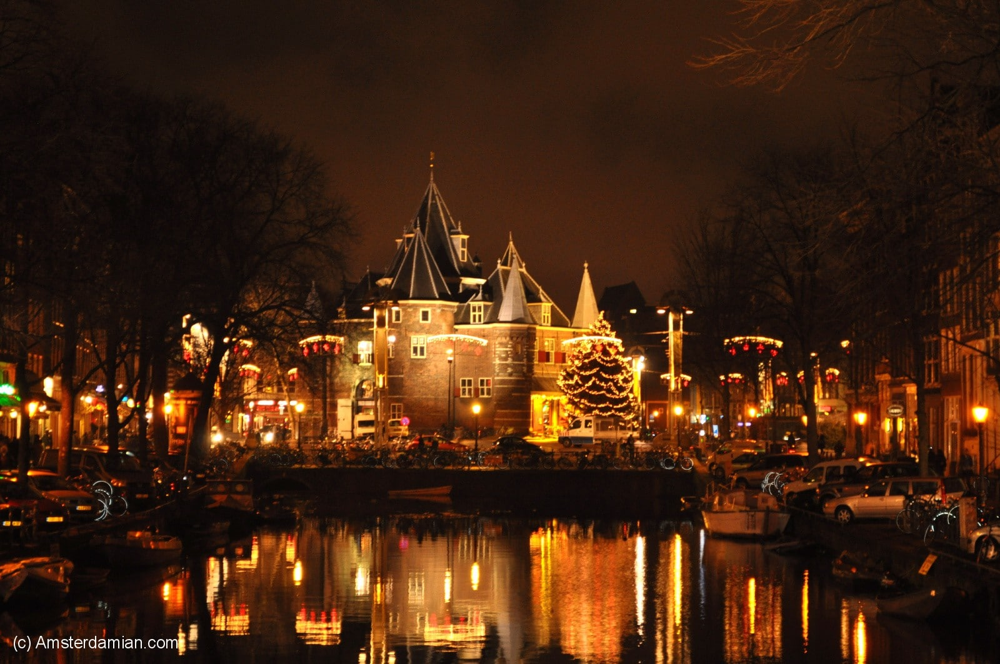
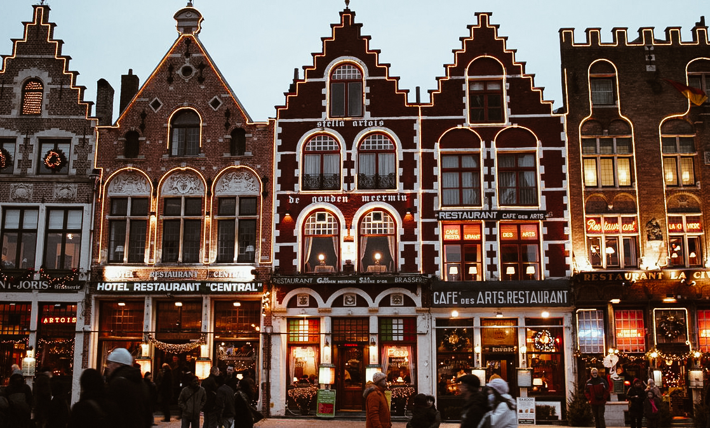
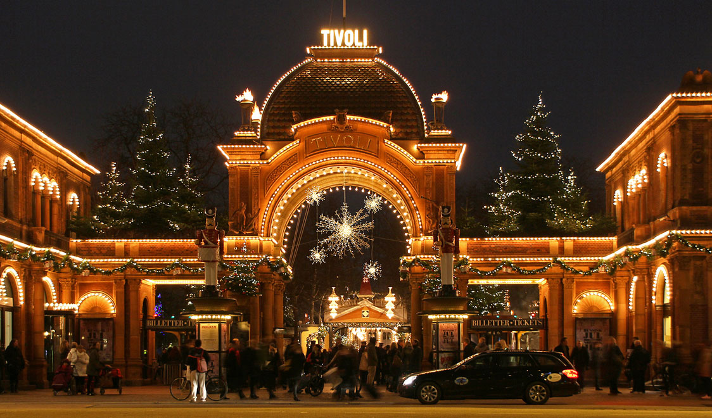
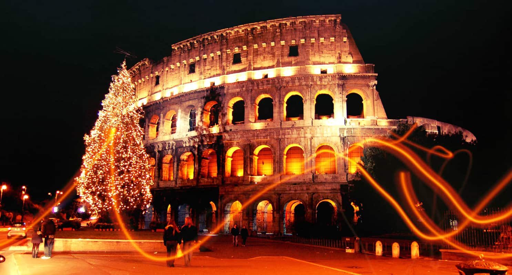

Голландцы в новогоднюю ночь сжигают рождественскую елку и запускают фейерверки. Елочные костры обозначают уход старого года, а фейерверк символизирует начало нового.
В Бельгии распространено животноводство, поэтому фермеры обязательно поздравляют с Новым годом своих коров. Довольно необычная новогодняя традиция!
Жители Дании целый год собирают старую и ненужную посуду. В новогоднюю ночь они без сожалений разбивают всю ненужную утварь. Что же, поверье говорит, что посуда бьется к счастью!
В Италии одна из самых распространенных традиций - надевать в новогоднюю ночь красное нижнее белье. Это привлекает удачу в наступающем году.
